最新博客
- 2020年01月04日 HTML+CSS知识汇总 摘要: 为了后续能够自主研发项目实战课程，特意回顾了下前端技术开发，将其所有涉及到的知识点做了整理，思维导图如下over...... 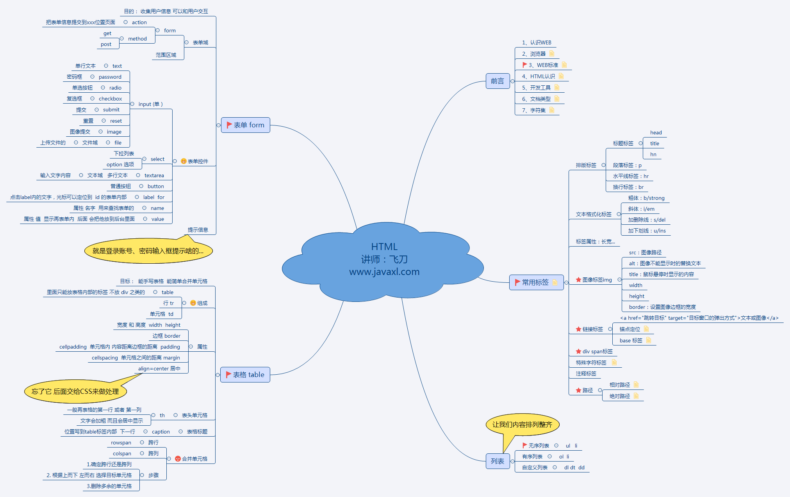 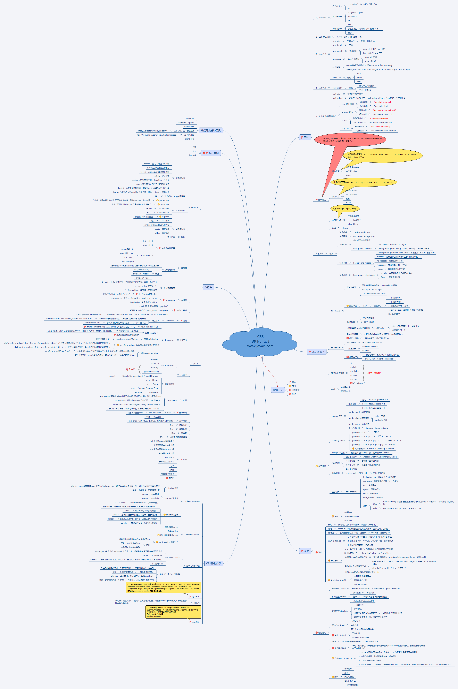 发表于 2020-01-04 01:31 阅读(53)
- 2020年01月03日 Shell编程 摘要: 花了一点时间将运维一小块知识给学习了下，以下是相关知识梳理的思维导图后续会出详细的知识相关博客over...... 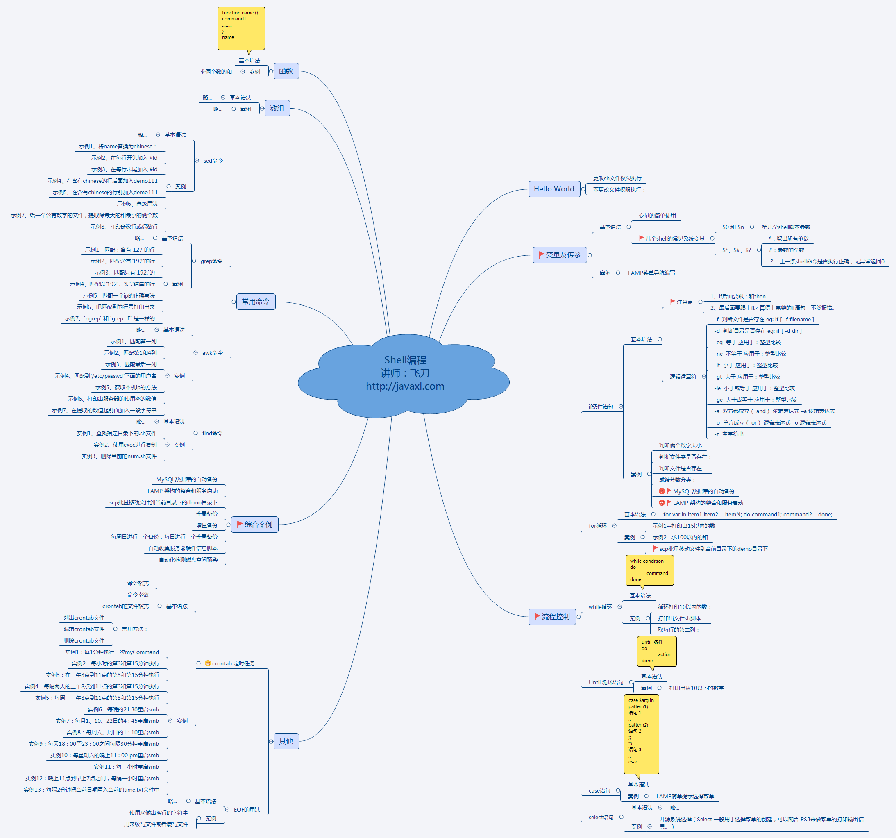 发表于 2020-01-03 01:26 阅读(35)
- 2019年12月10日 秒杀课程即将发布 摘要: 秒杀课程相关知识点思维导图这篇博客紧接前面“高并发常用解决方案”，用代码论证前面博客所讲理论后面会慢慢上代码相关博客，尽情期待....另外，这张图只是初稿，后面会画的更将详细；未完待续...... 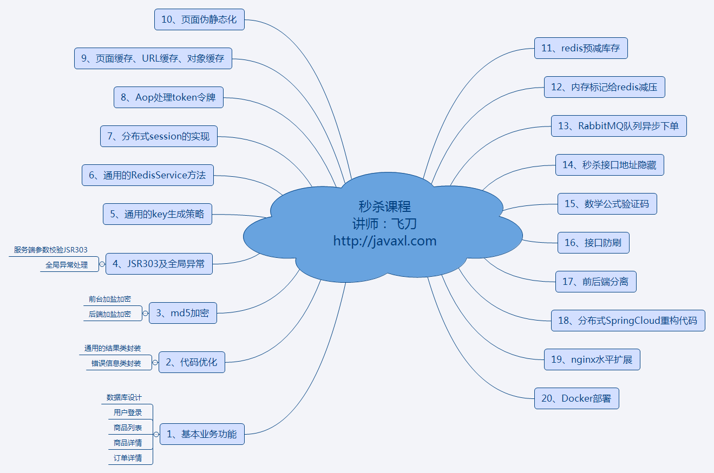 发表于 2019-12-10 22:45 阅读(142)
- 2019年12月09日 XMind8的使用 摘要: 以后讲解知识点，将利用XMind配合讲解，本篇博客主要介绍XMind怎么使用下载地址：https://www.xmind.cn/xmind8-pro/看懂以下这个思维导图，就能灵活Xmind常用功能了over......... 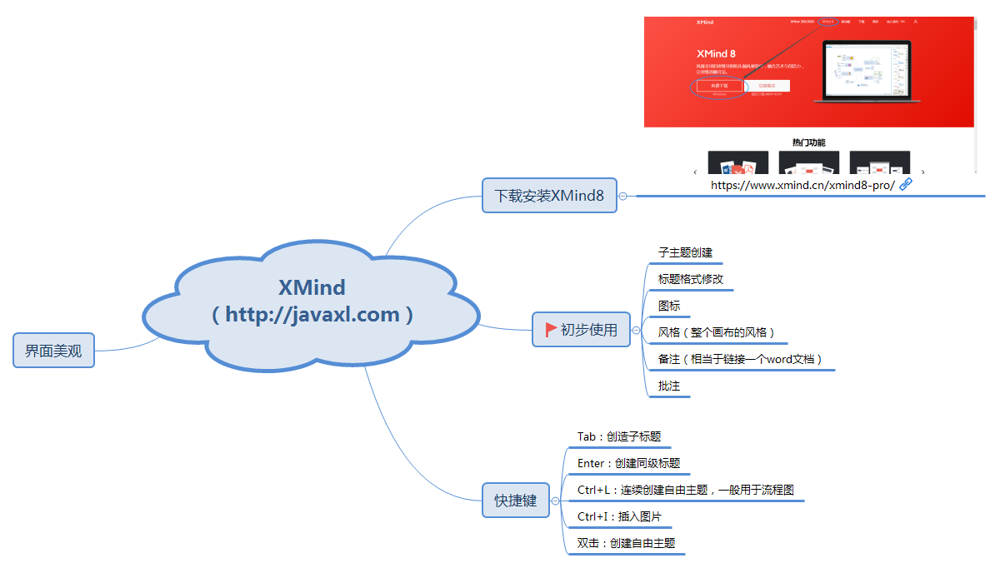 发表于 2019-12-09 09:32 阅读(110)
- 2019年11月25日 高并发常用解决方案汇总 摘要: 1、扩容扩容思路：u 垂直扩容（纵向扩展）：提高系统部件能力u 水平扩容（横向扩展）：增加更多系统成员来实现 数据库扩容：读操作扩展：memcache、redis、CDN等缓存写操作扩展：Cassandra、Hbase2、缓存(1) 浏览器：页面静态化(2) 网络转发：nginx反向代理(3) 应用服务：集群... 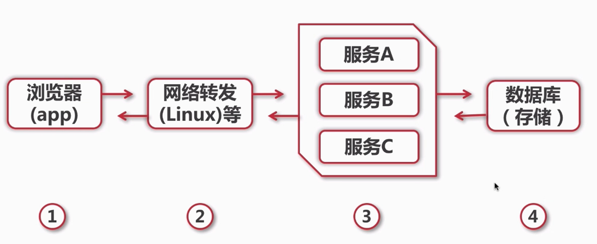 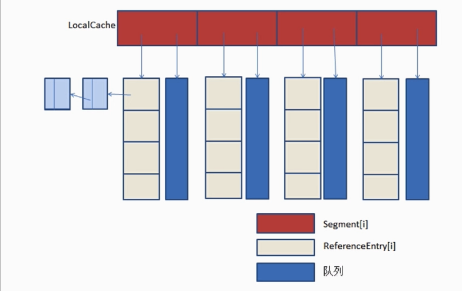 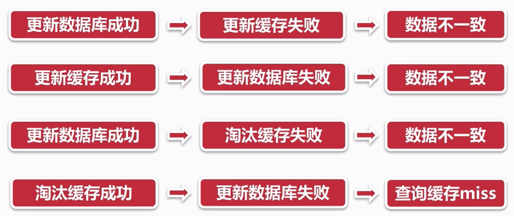 发表于 2019-11-25 22:48 阅读(174)
- 2019年11月24日 自定义注解结合Aop数据字典应用 摘要: 本篇博客主要聊聊自定义注解在项目中的应用，自定义注解用来做系统监控日志，这个用法已经烂大街了，无法让面试官眼前一亮的感觉。项目开发中数据字典使用场景非常多，使用数据字典有一点非常的不方便，那就是数据库中存放的是数字，而实际页面上展示的却是汉字；那么这也就造成了，每次做页面展示的时候都需要给数字进行转义，将其转... 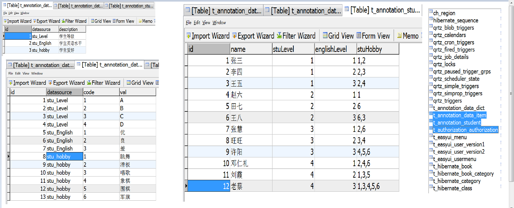 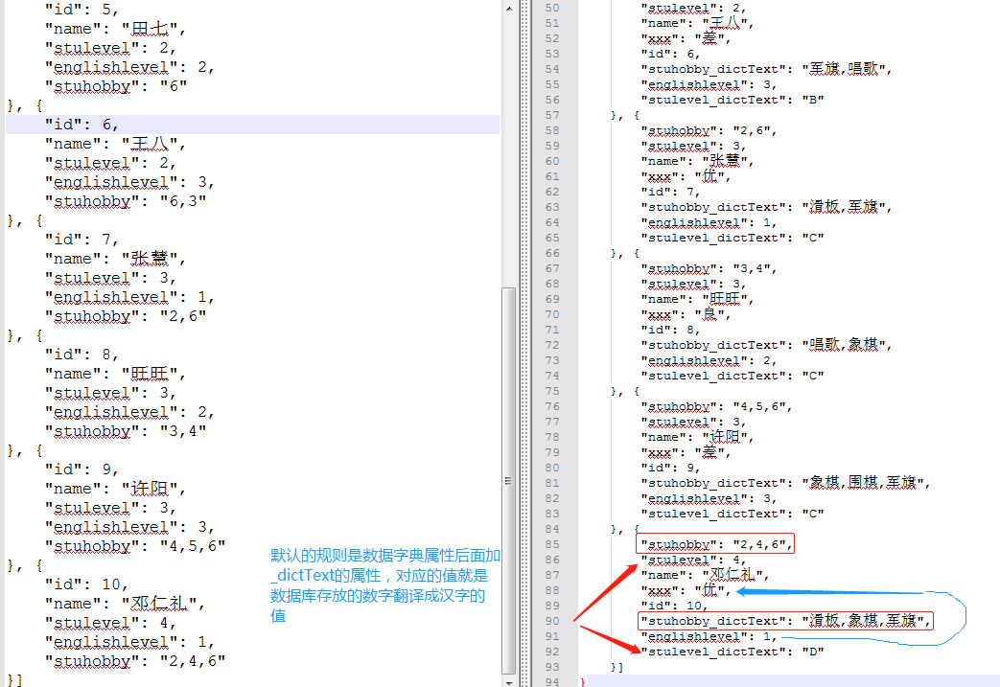 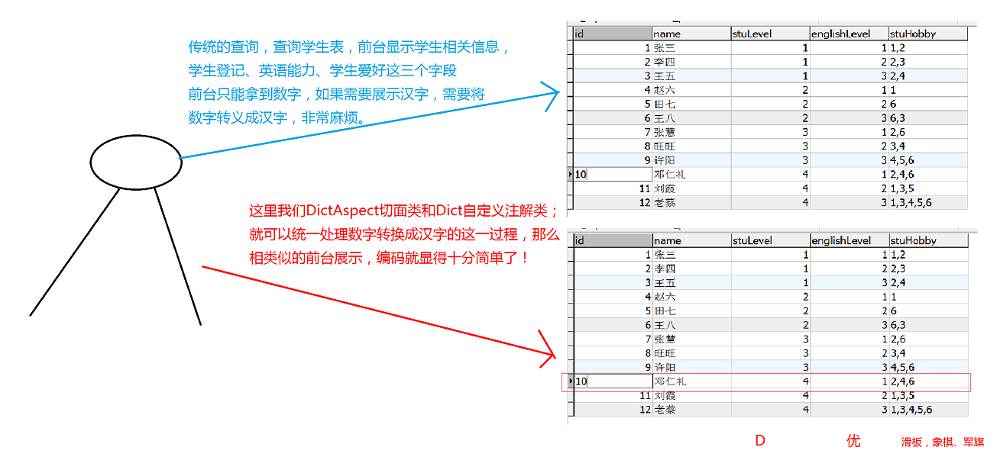 发表于 2019-11-24 09:40 阅读(201)
- 2019年11月23日 RabbitMQ整合SpringCloud 摘要: 注意一点，在发送消息的时候对template进行配置mandatory=true保证监听有效生产端还可以配置其他属性，比如发送重试，超时时间、次数、间隔等 消费端核心配置u 首先配置手工确认模式，用于ACK的手工处理，这样我们可以保证消息的可靠性送达，或者在消费端消费失败的时候可以做到重回队列、根据业务记录... 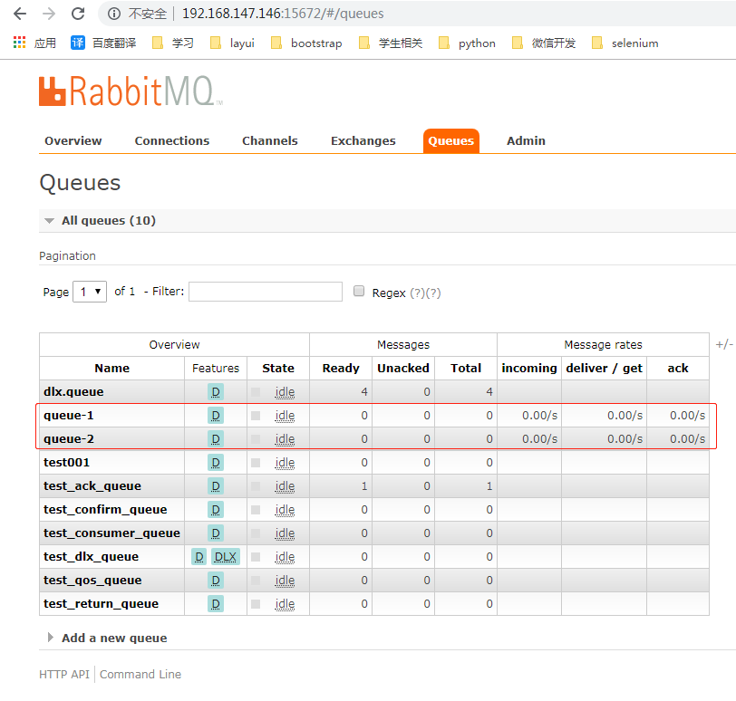 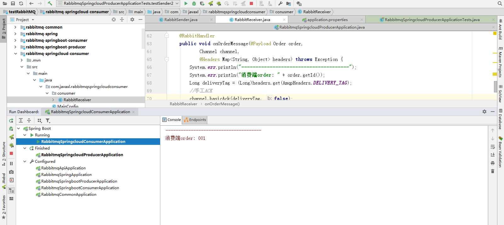 发表于 2019-11-23 04:06 阅读(122)
- 2019年11月20日 RabbitMQ消息模式（TTL消息、死信队列） 摘要: TTLTTL是Time To Live的缩写，也就是生存时间RabbitMQ支持消息的过期时间，在消息发送时可以进行指定RabbitMQ支持队列的过期时间，从消息入队列开始计算，只要超过了队列的超时时间配置，那么消息自动的清除 纯控制台操作（演示TTL队列消息特点）针对队列，只要是这个队列的消息，就只有这么... 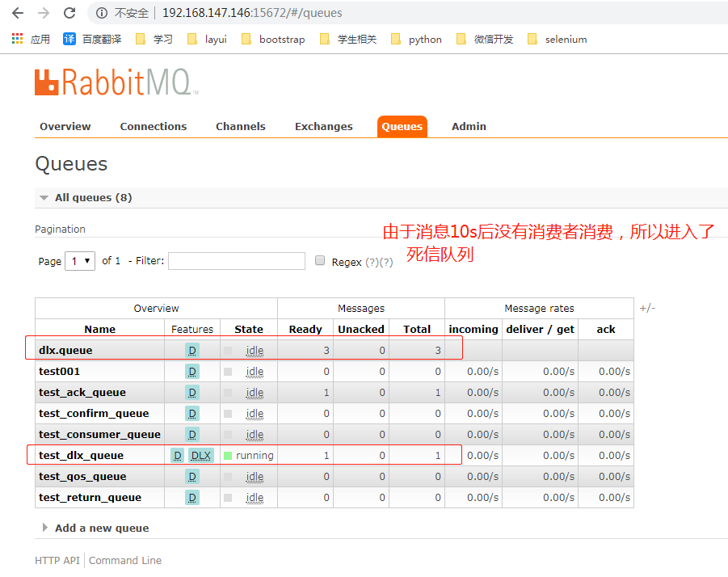 发表于 2019-11-20 03:23 阅读(99)
- 2019年11月20日 RabbitMQ消息模式（消息的ACK与重回队列） 摘要: 消费端手工ACK与NACK消费端进行消费的时候，如果由于业务异常我们可以进行日志的记录，然后进行补偿如果由于服务器宕机等严重问题，那么我们就需要手工进行ACK，保障消费端消费成功！ 消费端的重回队列消费端重回队列是为了对没有处理成功的消息，把消息重新回递给Broker！一般我们在实际应用中，都会关闭重回队列... 发表于 2019-11-20 03:18 阅读(84)
- 2019年11月20日 RabbitMQ消息模式之消费端限流 摘要: 什么是消费端的限流？假设一个场景，首先，我们RabbitMQ服务器有上万条未处理的消息，我们随便打开一个消费者客户端，会出现下面情况：巨量的消息瞬间全部推送过来，但是我们单个客户端无法同时处理这么多数据！ 消费端限流RabbitMQ提供的解决方案RabbitMQ提供了一种qos（服务质量保证）功能，即在非自... 发表于 2019-11-20 03:16 阅读(108)
博主信息

javaxl_小李飞刀
(知识改变命运，教育改变生活)
备案号：湘ICP备19000029号
Copyright © 2018-2019 javaxl晓码阁 版权所有